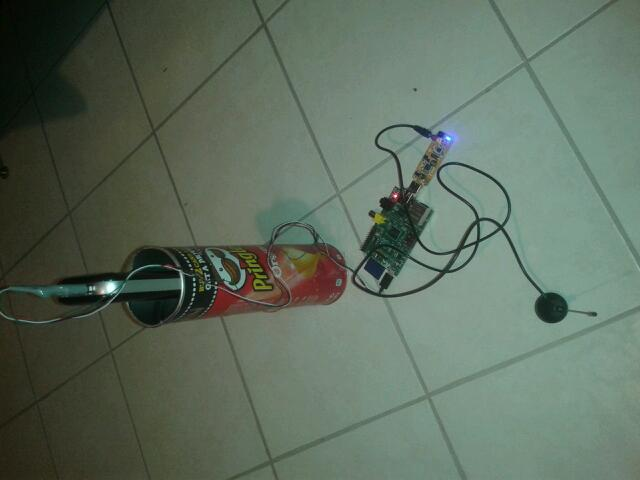
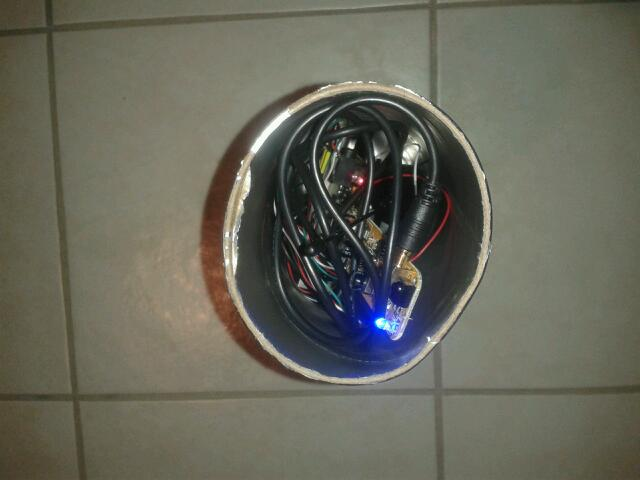
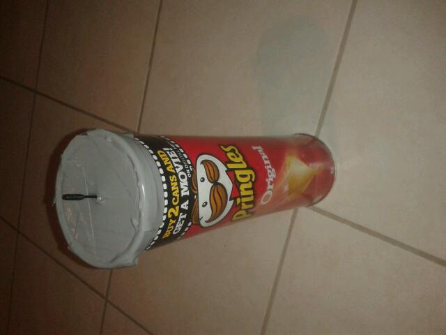

Evil rtl-sdr pringles can
Date: 2015-02-22
After seeing this scene in ALGORITHM: The Hacker Movie ,
I decided to make something like this.
So, what if there is a signal, but it's only local.
You have to be at the building to recieve it, you can't stand there for hours and can't park in range.
So capturing the signal is impossible for longer than 10 minutes,
because standing there as a pedestrian with an SDR and a laptop or a smartphone for a long time is suspicious.
This movie suggested making a can, with a SoC in it, and a battery, hide it in a bush, and it would attack a local network.
So, my idea came fast.

What's inside?
- A 15000 mAh battery
- A raspberry pi.
- A R820T.

To give it a more protection the lid is required.
But it doesn't fit, because of the antenna.
But, that's fixed now :)

What harm can this do?
You could record all communications (walkie talkie)
Imagine.
Possible problems:
A garbage collector throws away your 100€ tech.
If it is a high security building, they will detect it if they have heat cameras.
- Justaguy